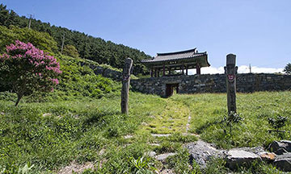
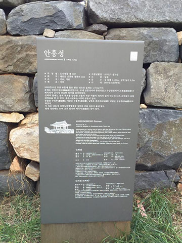
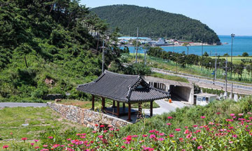

제 2경 안흥성 설명
오랜세월 비바람에도 그 모습을 잃지 않은 조선시대의
성성마루에 서면 점점이 떠있는 섬들 사이로 만선의 깃발이 나부낀다.
-
안흥성(안흥진성)은 근흥면 정죽리 안흥항의 뒷산에 위치해 있는데, 조선조 제17대 효종 6년(1655)에 축성된 것이다.
-

축성연유를 살펴보면 경기사인 김석견이 왕에게 상소하여 안흥진성의 축조를 청원하니 왕이 지경연사인 이후원을 불러 안흥진성 축조의 필요성을 하문하였다.
이에 왕이 충청감사에 명해 안흥진성을 축조케하니 인근 19개 읍민이 동원되어 10여년만에 축성되었다. -

안흥성은 이후 240년간 내려오다 조선조의 고종 31년(1894년) 동학혁명때 성내의 건물이 모두 소실되고, 이에 따라 성곽은 자연히 폐성되고 말았다.
안흥성은 둘레 1,568미터, 높이 3.5미터에 이르는 석성(石城)으로 지난 1976년 1월 8일 충청남도지정 기념물 제11호로 지정되었다.